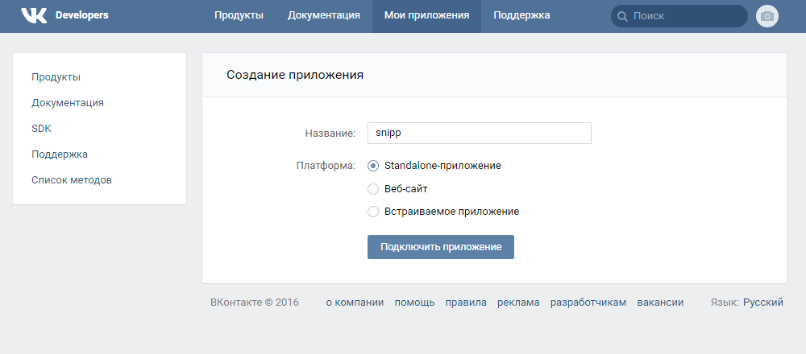
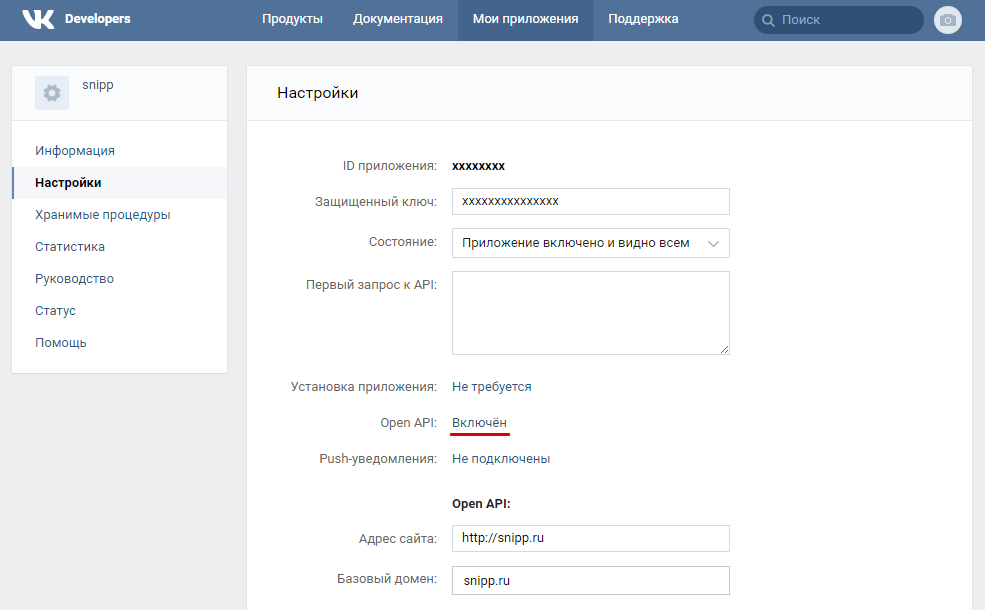

Для начала вы должны быть авторизированы в VK и являться администратором группы или страницы. Далее нужно создать приложение.
Создаем Standalone-приложение на https://vk.com/apps?act=manage

В настройках приложения включаем Open API, указываем адрес своего сайта и базовый домен, там же находится ID приложения и защищенный ключ.

Нужно получить права и секретный код. Формируем URL подставляя данные своего приложения и вставляем его в браузер.
https://oauth.vk.com/authorize?client_id=ID_ПРИЛОЖЕНИЯ&display=page&redirect_uri=https://api.vk.com/blank.html&scope=offline,wall,photos&response_type=codeЗапрашиваем access_token. Формируем новый URL, подставив client_id, client_secret и полученный выше код. В ответе получаем access_token.
https://oauth.vk.com/access_token?client_id=ID_ПРИЛОЖЕНИЯ&client_secret=ЗАЩИЩЕННЫЙ_КЛЮЧ&redirect_uri=https://api.vk.com/blank.html&code=СЕКРЕТНЫЙ_КОДДалее используем полученный токен в запросах к VK API